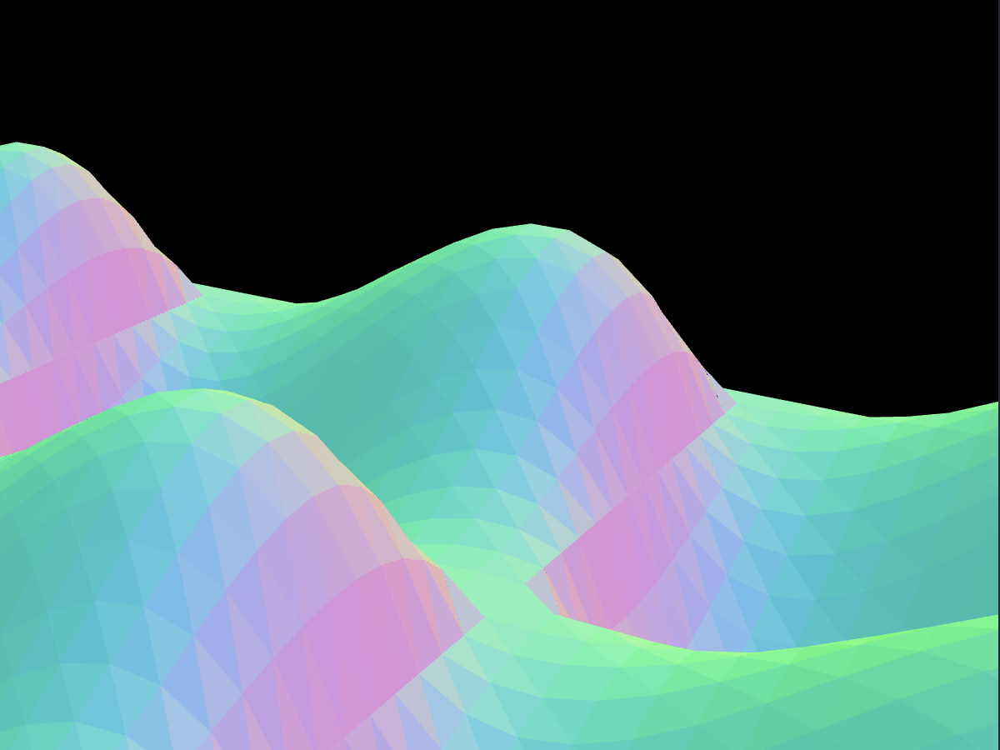

climb, glide, walk

climb to sonic vantage points. gaze across the terrain to discover sounds previously unable to be produced by a standalone hardware instrument.
glide across frequencies with "fretless" note control. experience wave terrain synthesis as a unique instrument unlimited by traditional frequency divisions.

walk across terrain in modulated polar patterns and mold your sound using the power of the superformula. control your path, control your sound.
climb to sonic vantage points. gaze across the terrain to discover sounds previously unable to be produced by a standalone hardware instrument.
glide across frequencies with "fretless" note control. experience wave terrain synthesis as a unique instrument unlimited by traditional frequency divisions.
walk across terrain in modulated polar patterns and mold your sound using the power of the superformula. control your path, control your sound.